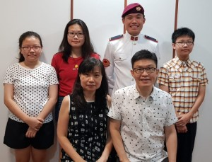

Intro
Hi, I am Yi Jie, a pround alumni of Montfort Military Band and its ex-Band Major
Birthday
I will be 18 years old this 21 January 2023
Current Education
I am currently studying and am part of the Nanyang Polytechinic Symphonic Orchestra (Did not pursue Exco position to focus on my Academics)
Work Experience
Fair Price
I used to work at Fair Price in Ang Mo Kio Hub for 4 months before entering Polytechinic. I was assign the fruits section and would help to restock the items. Sometimes I would also help in the vegetable section as well. It was the first time I had ever worked and it was hell, especially during the Chinese New Year Times where it was crowded and we had to handle the Oranges. Overall I came out with an even bigger respect for these workers and what they do as well as knowledge of how this buisiness works.
Usherer: Young Living Essensial Oils
I worked with this company during tehe First Year break of Polytechinic. I worked with them for four days. It was quite tough as there was a very big crowd of people from different countries in South East Asia and was hard to manage. Fortunately, I had very nice co-workers and bosses who took care of me and the other temperory workers like getting us drinks. Overall, I learn how to manage crowds and some nice quotes from the event.
Example: "Chase you Fears"
Skills
Coding
I have four years of Python Coding experience, two years of HTML, CSS and Javascript experience and one year of C++ and C# coding experience.
Strength 1. Perserverance
No matter how big the challenge is, I will do my best to push through and accomplish my goals. And when I fail, I will pick myself up again, understand what went wrong, learn from it and continue onto the next challange.
Strength 2. Supportive
I will do my best to support anyone that needs any form of help and support, so long it is within my abilities.
Strength 3. Time Planning
I can manage my time well by first, setting priorities based on urgency and need, and then plan out the time it needs to complete certain task on certain days
Aspiration
1. National University Of Singapore(NUS)
One of my hopes to be able to get into NUS Computer Science Course to further explore the world of computers in other aspects that I have not seen in my years in NYP.
2. Telling A Story With A Game
Another one of my amibitions is to be able to create a game( + music and art) that can tell a story of the world the game takes place in that can touch peoples hearts, and inspire them to create and explore.
3. Better At The Trumpet
I have played the trumpet for over 10 years now and still feel that I can improve more.
Family
Under The Roof
I have a Mother, a Father, an older brother who is currently studying in Singapore Management University (SMU), an older sister who is studying in Nanyang Technological University(NTU), and a younger sister.
The Whole Tree
I have an extremely large number of cousins because my parents have multiple siblings and they have cousins too ! This shows we are all connected in some ways :)
